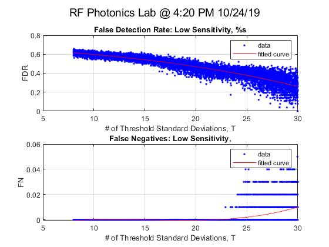

clf;clear all; clc; close all;
samples=10000;
T_h_begin = 1.5;
T_h_end = 10;
T_m_begin = 4;
T_m_end = 20;
T_l_begin = 8;
T_l_end = 30;
Ave2sec = 0;
T_high = 4;
T_med = 8;
T_low = 12;
Data20sec = zeros(200,1);
history = zeros(100,1);
RI_med = zeros(100,1);
RI_high = zeros(100,1);
RI_low = zeros(100,1);
ID_low = zeros(100,1);
ID_med = zeros(100,1);
ID_high = zeros(100,1);
TID_low = zeros(100,1);
TID_med = zeros(100,1);
TID_high = zeros(100,1);
FD_low = zeros(100,1);
FD_med = zeros(100,1);
FD_high = zeros(100,1);
FN_low = zeros(100,1);
FN_med = zeros(100,1);
FN_high = zeros(100,1);
FDR_low = 0;
FDR_med = 0;
FDR_high = 0;
FDR_low_array = zeros(samples,1);
FDR_med_array = zeros(samples,1);
FDR_high_array = zeros(samples,1);
T_high_array = zeros(samples,1);
T_med_array = zeros(samples,1);
T_low_array = zeros(samples,1);
FN_low_array = zeros(samples,1);
FN_med_array = zeros(samples,1);
FN_high_array = zeros(samples,1);
Opti_low = zeros(samples,1);
Opti_med = zeros(samples,1);
Opti_high = zeros(samples,1);
SoundData1 = 'Book5.xlsx';
DataMat = zeros(30,4);
Ambients = xlsread(SoundData1, 'A2:A31');
Quiets = xlsread(SoundData1, 'B2:B31');
Mediums = xlsread(SoundData1, 'C2:C31');
Louds = xlsread(SoundData1, 'D2:D31');
[k,DataLoc] = xlsread(SoundData1, 'E1:E1');
for s=1:samples
T_high=T_h_begin+s*(T_h_end-T_h_begin)/samples;
T_med=T_m_begin+s*(T_m_end-T_m_begin)/samples;
T_low=T_l_begin+s*(T_l_end-T_l_begin)/samples;
T_high_array(s,1)=T_high;
T_med_array(s,1)=T_med;
T_low_array(s,1)=T_low;
RI_med = zeros(100,1);
RI_high = zeros(100,1);
RI_low = zeros(100,1);
ID_low = zeros(100,1);
ID_med = zeros(100,1);
ID_high = zeros(100,1);
TID_low = zeros(100,1);
TID_med = zeros(100,1);
TID_high = zeros(100,1);
FD_low = zeros(100,1);
FD_med = zeros(100,1);
FD_high = zeros(100,1);
FN_low = zeros(100,1);
FN_med = zeros(100,1);
FN_high = zeros(100,1);
for c =1:200
Data20sec(c,1) = Ambients(randi([1 30],1,1),1);
end
Ave20sec = mean(Data20sec);
Std20sec = std(Data20sec);
RT_high = Ave20sec+Std20sec*T_high;
RT_med = Ave20sec+Std20sec*T_med;
RT_low = Ave20sec+Std20sec*T_low;
for c=1:25
new = Ambients(randi([1 30],1,1),1);
history(c,1)=new;
if new>RT_high
ID_high(c,1)=1;
FD_high(c,1)=1;
end
if new>RT_med
ID_med(c,1)=1;
FD_med(c,1)=1;
end
if new>RT_low
ID_low(c,1)=1;
FD_low(c,1)=1;
end
end
for c=26:50
new = Quiets(randi([1 30],1,1),1);
history(c,1)=new;
RI_high(c,1)=1;
if new>RT_high
ID_high(c,1)=1;
TID_high(c,1)=1;
else
FN_high(c,1)=1;
end
if new>RT_med
ID_med(c,1)=1;
FD_med(c,1)=1;
end
if new>RT_low
ID_low(c,1)=1;
FD_low(c,1)=1;
end
end
for c=51:75
new = Mediums(randi([1 30],1,1),1);
history(c,1)=new;
RI_high(c,1)=1;
RI_med(c,1)=1;
if new>RT_high
ID_high(c,1)=1;
TID_high(c,1)=1;
else
FN_high(c,1)=1;
end
if new>RT_med
ID_med(c,1)=1;
TID_med(c,1)=1;
else
FN_med(c,1)=1;
end
if new>RT_low
ID_low(c,1)=1;
FD_low(c,1)=1;
end
end
for c=76:100
new = Louds(randi([1 30],1,1),1);
history(c,1)=new;
RI_high(c,1)=1;
RI_med(c,1)=1;
RI_low(c,1)=1;
if new>RT_high
ID_high(c,1)=1;
TID_high(c,1)=1;
else
FN_high(c,1)=1;
end
if new>RT_med
ID_med(c,1)=1;
TID_med(c,1)=1;
else
FN_med(c,1)=1;
end
if new>RT_low
ID_low(c,1)=1;
TID_low(c,1)=1;
else
FN_low(c,1)=1;
end
end
FDR_low = sum(FD_low, 'all')/sum(ID_low, 'all');
FDR_med = sum(FD_med, 'all')/sum(ID_med, 'all');
FDR_high = sum(FD_high, 'all')/sum(ID_high, 'all');
FDR_low_array(s,1) = FDR_low;
FDR_med_array(s,1) = FDR_med;
FDR_high_array(s,1) = FDR_high;
FN_low_array(s,1)=sum(FN_low,'all')/100;
FN_med_array(s,1)=sum(FN_med,'all')/100;
FN_high_array(s,1)=sum(FN_high,'all')/100;
Opti_low(s,1)= FDR_low_array(s,1)+FN_low_array(s,1);
Opti_med(s,1)=FDR_med_array(s,1)+FN_med_array(s,1);
Opti_high(s,1)=FDR_high_array(s,1)+FN_high_array(s,1);
end
FDRfit_high = fit( T_high_array,FDR_high_array, 'poly3','normalize','on');
FNfit_high = fit( T_high_array, FN_high_array,'poly3','normalize','on');
FDRfit_med = fit( T_med_array, FDR_med_array,'poly3','normalize','on');
FNfit_med = fit( T_med_array, FN_med_array,'poly3','normalize','on');
FDRfit_low = fit( T_low_array,FDR_low_array,'poly3','normalize','on' );
FNfit_low = fit( T_low_array,FN_low_array,'poly3','normalize','on' );
DataLoc = char(DataLoc);
figure(1)
subplot(2,1,1)
plot(FDRfit_low,T_low_array,FDR_low_array)
title('False Detection Rate: Low Sensitivity, %s')
xlabel('# of Threshold Standard Deviations, T')
ylabel('FDR')
grid on
subplot(2,1,2)
plot(FNfit_low,T_low_array,FN_low_array)
title('False Negatives: Low Sensitivity,')
xlabel('# of Threshold Standard Deviations, T')
ylabel('FN')
suptitle(DataLoc)
grid on
figure(2)
subplot(2,1,1)
plot(FDRfit_med,T_med_array,FDR_med_array)
title('False Detection Rate: Medium Sensitivity,')
xlabel('# of Threshold Standard Deviations, T')
ylabel('FDR')
grid on
subplot(2,1,2)
plot(FNfit_med,T_med_array,FN_med_array)
title('False Negatives: Medium Sensitivity,')
xlabel('# of Threshold Standard Deviations, T')
ylabel('FN/100')
suptitle(DataLoc)
grid on
figure(3)
subplot(2,1,1)
plot(FDRfit_high,T_high_array,FDR_high_array)
title('False Detection Rate: High Sensitivity,')
xlabel('# of Threshold Standard Deviations, T')
ylabel('FDR')
grid on
subplot(2,1,2)
plot(FNfit_high,T_high_array,FN_high_array)
title('False Negatives: High Sensitivity,')
xlabel('# of Threshold Standard Deviations, T')
ylabel('FN/100')
suptitle(DataLoc)
grid on
fit_high = fit( T_high_array,Opti_high, 'poly3','normalize','on');
fit_med = fit( T_med_array, Opti_med,'poly3','normalize','on');
fit_low = fit( T_low_array,Opti_low,'poly3','normalize','on' );
figure(4)
subplot(3,1,1)
plot(fit_high,T_high_array,Opti_high)
title('FDR+False Negatives: High Sensitivity,')
xlabel('Threshold stdev')
ylabel('Pr')
grid on
subplot(3,1,2)
plot(fit_med, T_med_array,Opti_med)
title('FDR+False Negatives: Med Sensitivity,')
xlabel('Threshold stdev')
ylabel('Pr')
grid on
subplot(3,1,3)
plot(fit_low,T_low_array,Opti_low)
title('FDR+False Negatives: Low Sensitivity, ')
xlabel('Threshold stdev')
ylabel('Pr')
suptitle(DataLoc)
grid on
